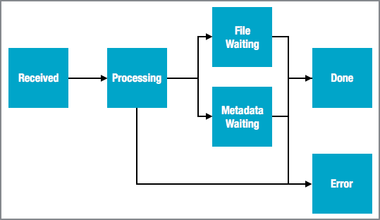

When you log in to Backlot, you can view the status of ingest jobs that you have
submitted via the Ooyala Ingestion Service (OIS).
The Ingestion Feed Activity tab ("ingest dashboard") displays the processing status of a
given file as well as other related information. You can apply filters to focus on smaller
groups ingest jobs. For related information, see:
- Ingestion for an introduction to OIS
- Ingest Log REST API for programmatic access to the OIS ingest
log. Users who log into the Backlot UI can view their OIS ingest log in the Ingestion Feed
Activity tab.
Log In to Backlot
To see the Ingestion Feed Activity tab, you must log in
to Backlot.
Navigate to the Ingestion Feed Activity Tab
Go to
ACCOUNT > Ingestion Feed Activity.
View the Ingest Dashboard
The ingest dashboard displays a list of ingest
jobs.
Note: If you logged in as a user with Upload Only privileges, you can see only the ingest jobs submitted
by your user account. If you logged in with any privileges, you will see all ingest jobs, including those submitted by other users.
| Column |
Description |
| Status |
Current status of this ingest job. See "Ingest Process Status" below for
details. |
| File Name |
Name of the file submitted for ingest. |
| File Type |
Type of file being processed. One of the following values.
- video
- manifest
- thumbnail
- caption
|
| Created |
Date and time when the ingest job was created. |
| Embed Code |
Embed code assigned by Backlot after the file was ingested successfully (status
= Done). |
| Asset ID |
Asset ID assigned by Backlot after the file was ingested successfully (status =
Done). |
Scrolling Through the Ingest Dashboard
By default, the ingest dashboard
displays data for the past month, with 100 records at a time. Scroll to the bottom of the
dataset to go to subsequent pages.
You can also use the Search icon at the top of the page to more quickly find the file you are looking for.
Filter the Ingest Jobs
You can focus your search by filtering the display
by:
- File Name
- Status
- Created Date:
- Calendar date picker for custom date range
- Last 1 month
- Last 1 week
- Last 1 Day
- Asset ID
Ingest Process Status
During the ingest process, ingested files can undergo
the following states:

| Status |
Description |
| Received |
Indicates that the file has been received by the OIS. Once the file has been
received, it becomes eligible for processing by the system. Note: Remote assets will
never be in the received state because the file is never ingested into the
system.
|
| Processing |
Indicates the following:
- manifest files (CSV or XML) - syntactical validation is currently
occurring.
- media files (video, thumbnail and closed-caption files) - ingestion into the
Ooyala ecosystem is currently occurring.
|
| File Waiting |
Indicates that a manifest file (CSV or XML) has been ingested and processed and
is waiting for the other media files (video, thumbnail and closed-caption files) to
be ingested. |
| Metadata Waiting |
Indicates that a media file (video, thumbnail or closed-caption) has been
ingested and is waiting for the manifest file (CSV or XML) that contains the related
metadata to be ingested. |
| Done |
When processed successfully, indicates the following:
- manifest file - the manifest is syntactically valid.
- video file - the file (along with its metadata) has been processed and an
embed code has been assigned by Ooyala.
- thumbnail and closed-caption files - the files have been ingested and
associated with the video.
|
| Error |
If an issue occurs while ingesting or processing a file, the status will go
into an error state. In this case, the ingest dashboard will include an error
message describing what went wrong.
- manifest file - indicates that it was found to be syntactically invalid.
- media file (video, thumbnail and closed-caption) - indicates that there was an
issue processing the file.
|